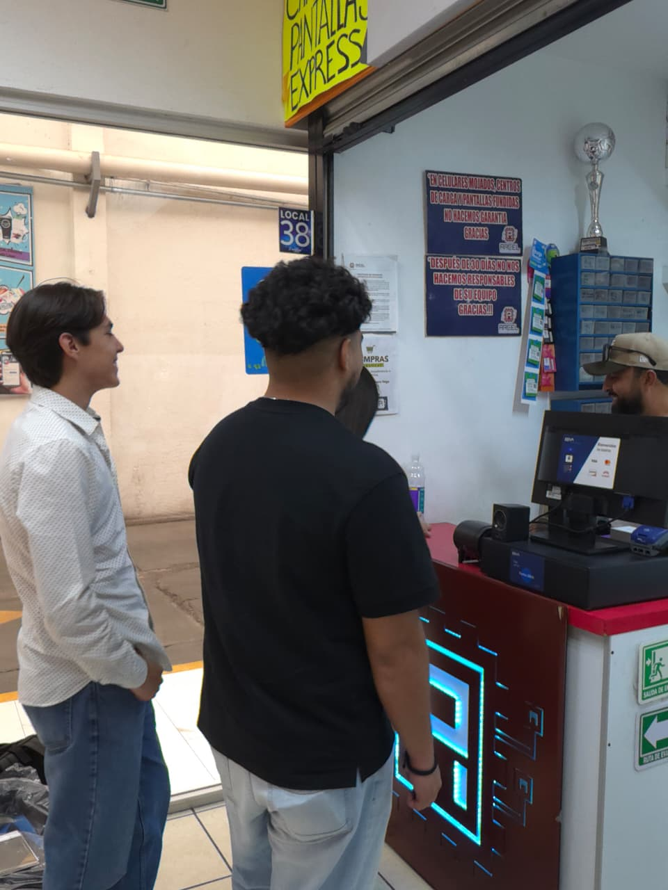

Planeación estratégica para un taller de reparación de celulares en Durango.
- Juan Antonio Delgado Rodríguez
- Idaly Guadalupe García Flores
- Ángel Gustavo Ocampo Franco
- Jorge Antonio Reyes Reyes
- José Antonio Rodríguez Rivera
Evidencias del acercamiento




Entrevista con Arcel
Quién es Arcel y qué resolver
Microempresa de servicio fundada en 2016, dedicada a la reparación de celulares, venta de accesorios y desbloqueos, ubicada en el centro de Durango.
Problemática
El registro de reparaciones se lleva en una libreta física: sin seguimiento del estado de cada equipo, sin aviso automático al cliente, con notas que se extravían y sin control de refacciones ni garantías.
Misión, visión y valores
MMisión
Ofrecer reparaciones de celulares rápidas, confiables y con garantía, dando a cada cliente certeza sobre el estado y el costo de su equipo.
VVisión
Ser para 2028 el taller de reparación de referencia en Durango, reconocido por su servicio ágil y su gestión digital de cada orden.
★Valores
01 Honestidad en diagnósticos 02 Cumplimiento de tiempos 03 Trato cercano al cliente 04 Responsabilidad con el equipo
Objetivos, metas y estrategias
Digitalizar el 100% de las órdenes de servicio en 6 meses.
Reducir 40% el tiempo de seguimiento a clientes.
Eliminar la pérdida de notas y confusiones de equipo.
Mes 3: sistema de órdenes operando.
Mes 4: avisos automáticos por WhatsApp.
Mes 6: inventario y refacciones bajo control.
E1Digitalización del servicio
Implementar un sistema de órdenes · capacitar al personal · migrar la libreta a registro digital.
E2Comunicación con el cliente
Avisos por WhatsApp · estatus consultable · encuesta de satisfacción tras la entrega.
De reactivo a interactivo
Arcel resuelve los problemas conforme aparecen y opera "como siempre se ha hecho", sin planear cambios ni anticipar la demanda.
Anticiparse con un sistema que prevea la carga de trabajo y diseñar activamente el futuro del taller, integrando la tecnología en la operación diaria.
Enfoque: Producción / Operaciones
Los 7 factores
Los cuatro escenarios
Hoy
Control manual en libreta, seguimiento por memoria y avisos por llamada.
Podría pasar
Optimista: adoptan una hoja de cálculo y la usan con disciplina.
Pesimista: siguen en la libreta y el desorden crece con la demanda.
Lo más seguro
Usar WhatsApp de forma más ordenada para avisar, sin un sistema real.
La meta
Sistema digital de órdenes con avisos automáticos, historial y refacciones.